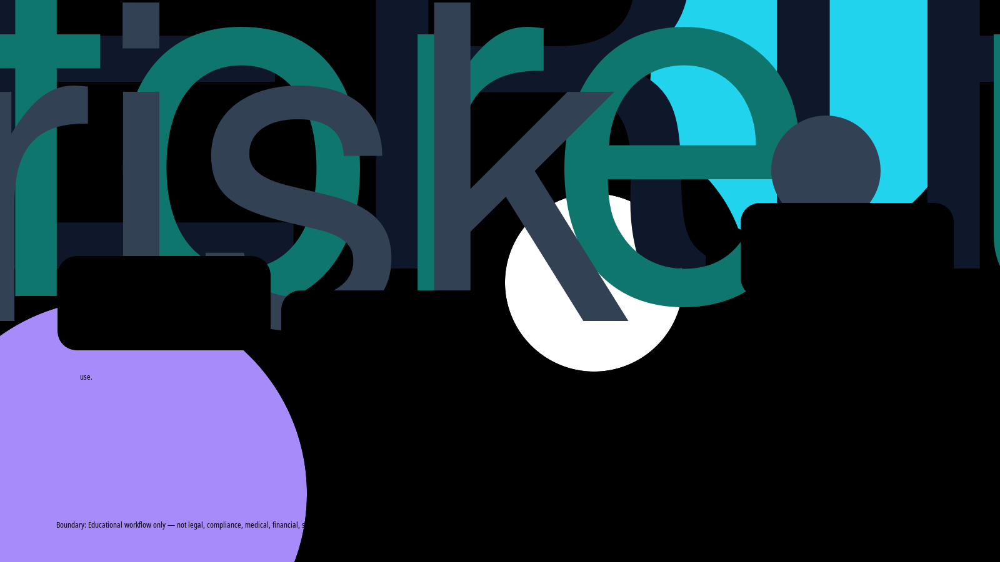

Evening publication · AI answer safety
The AI Answer Verification Loop
A safe educational loop for checking AI-generated answers before they influence customers, teams, vendors, public pages, or decisions.

Five-step verification loop
- Source check: Confirm which notes, records, policies, URLs, or examples the answer is allowed to use.
- Claim check: Separate facts, assumptions, estimates, opinions, and missing information before sharing.
- Risk check: Pause for human review when the answer touches price, identity, legal meaning, security, health, payments, or public claims.
- Audience check: Rewrite only for the intended reader: customer, employee, vendor, owner, or internal reviewer.
- Action check: Make the next step small, reversible, tracked, and owned by a named human.
Want a safer AI workflow for your business?
AICloudStrategist can review your current AI, automation, website, lead-capture, or trust workflow and show where human checks are needed before customer-facing use.
Contact AICloudStrategist for a free review or message us on WhatsApp.
Boundary
Educational workflow only — not legal, compliance, medical, financial, security, certification, savings, ranking, revenue, booking, or guaranteed-performance advice.